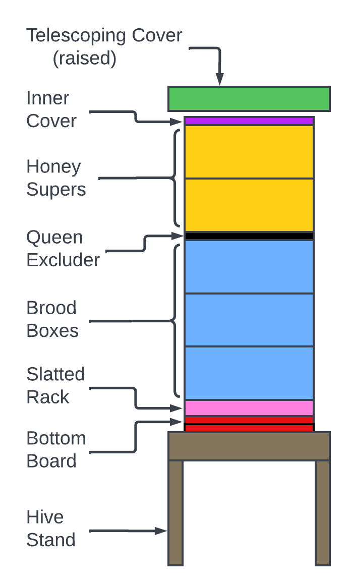

Overview

Typical Langstroth Hive Parts

Slatted Rack
Image courtesy Beverly Bees
A slatted rack is used to help with ventilation in the hive. It allows more fresh air to get into the hive, helping it to stay cool in the summer. And the extra height helps control the entrance of cold air in the winter.
Adding room between the bottom of the brood chamber and the entrance opening encourages the queen to lay eggs lower in the frames at the bottom of the brood chamber.
A final note is that slatted racks are believed to discourage swarming as it helps to relieve congestion in the entrance.
This is an optional part to the hive, and if you can afford it, a slatted rack is a great piece to add to the hive.
Usage Notes
The slatted rack is installed between the bottom board and the bottom box used for the brood chamber.
Notes on Making One
The number of slats should match the number of frames in the hive box (e.g., NUC boxes get 5 slats).
When I have made one, I didn't cut dados in the sides. I found that gluing and nailing the flat board into place was sufficient.
More Information
Web Sites
- How to Build a Slatted Rack, by Honey Bee Suite
- Slatted racks: everything you need to know, by Honey Bee Suite
- A Slatted Rack and Robbing Screen Can Improve Your Hive Entrance, by Backyard Beekeeping
- Slatted Rack Plans, plans by Matthew Waddington of Duvall, Washington